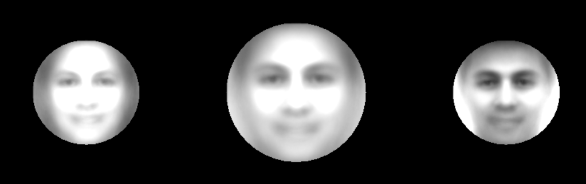
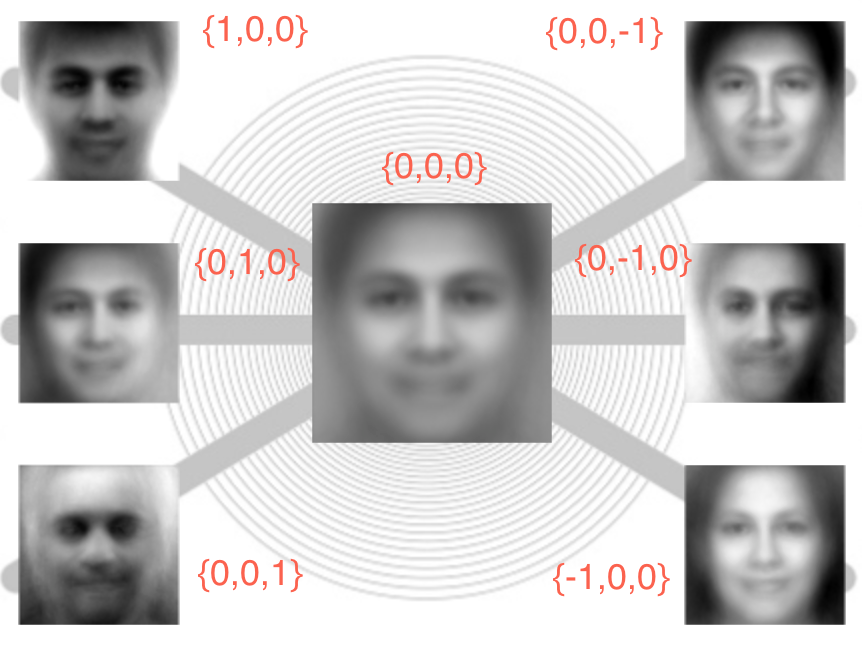
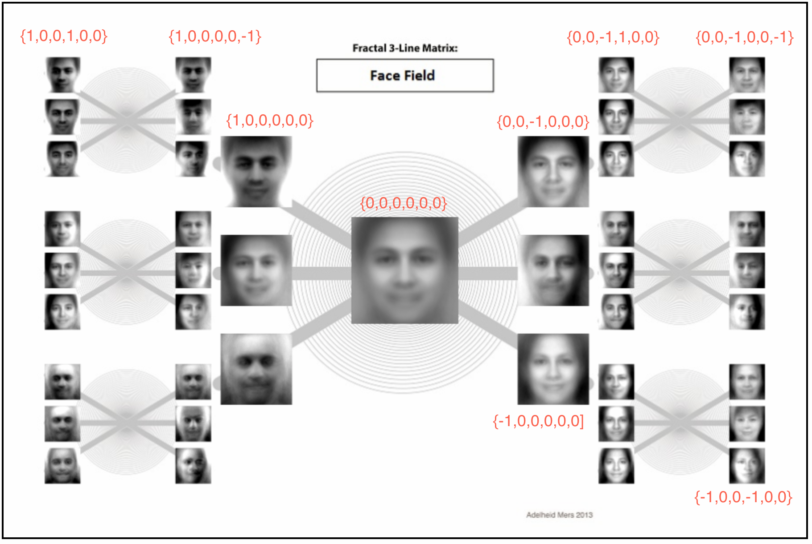

Our brains struggle visualizing spaces with more than 3 dimensions. This is a problem we tried to address in our FaceCloud and FaceField projects. We present here a possible solution using fractional dimensions to represent higher dimensions. The examples here are all based on the Eigenfaces face recognition algorithm where we were dealing with high dimension PCA spaces. But the visualization methodology is not specific to PCA.
The model we used for the Face Field project is a 60-dimensional ‘face space’. That is, we work with 60 Eigenvectors (or Eigenfaces) for all of our operations, be it classic face recognition, the anti-face calculation, or synthetic face generation.
We’ve repeatedly tried to create visualizations of this 60-dimensional space. Working with images makes this easier because one can see immediately what many of the Eigenvectors encode. Working with faces is even better because we’re so tuned to reading faces.
For instance the first Eigenface codes for both lighting and gender.

In this picture we see the ‘mean face’ or ‘average face’ in the center, and the results of shifting the first eigenface’s value (that is, its eigenvalue) from -1 to 1. Note that the face on the left is: female, white face on dark background. The face on the right is: male, dark face on light background.
The coordinates for the mean face are {0,0,0,0,0,…..,0} – zeroes for all 60 eigen values.
The coordinates for the face on the left are {-1,0,0,0,0,…..,0} – minus one for the first eigen value, 0 for the
remaining 59.
The coordinates for the face on the right are {1,0,0,0,0,…..,0} – one for the first eigen value, 0 for the remaining
59.
—-
Lets take this a step further and look at the first 3 Eigenfaces. All of the faces below have Eigenvalues of 0 for
all Eigenfaces beyond the 3rd one. The values for the first 3 are displayed on the diagram. We have just discussed
the first Eigenface in our preceding paragraph. It is represented here by the axis that goes from the upper-left to
the lower-right. The second Eigenface seems to encode for side lighting. The third Eigenface encodes for top vs
bottom lighting which also incidentally encodes for hair.

But wait, you say, where is the face corresponding to these eigenvalues: {1,1,1}. or {1,1,0} or {-1,0,1}? These are indeed not displayed. One could imagine a cube with the X, Y and Z axes being the first 3 eigen vectors and these other missing faces being the vertices and edges of the cube. So go imagine that because I haven’t got a graphic handy that displays that. Even if I did, what would we have accomplished? Simply displaying 3 dimensions of data in 3 dimensions. The topic of this article concerns High Dimensional Spaces.
We can take the ‘Face Sextant’ above a step further and use Adelheid Mers’ fractal 3-line matrix to browse a 6 dimensional face space:

I only typed in the coordinates for a few faces. Hopefully you can easily divine what the other values would be. Once again we are missing the edges and vertices of the fractal cube (i.e. the face at {1,1,1,1,1,1} is not on this diagram).
So this process could be repeated over and over-again, adding 3 new dimensions to our visualization on each iteration. It is a loss-less method of representing higher dimensions using smaller and smaller fractal spaces.
In terms of actually making a usable visualization, the faces would get smaller of course so we would need a pan and zoom capability. Here is a visualization using this approach:
Face Cloud from Robert Woodley on Vimeo.
It displays faces with non-zero eigenvalue for the first 12 eigenfaces. In other words it is a visualization of 12 dimensional space. Note also it is using a tetrahedral approach as opposed to a cubic approach. That is, the coordinates for the first 4 faces to emanate from the Mean Face are: {1,1,1}, {-1,-1,1}, {1,1,-1}, {-1,-1,-1}. This reduces the number of faces, thereby reducing the visual clutter and giving the graphics card a chance to keep up with the calculations.
That was a video. The original was written in javascript using three.js and can be run here using chrome on a computer with a good graphics card.
—–
Separately, many of you have seen the Synthetic Face machine. It allows you to tweak all 60 eigen values to get any face you want from the face space, in real-time:
So it is not a way to visualize high dimension spaces, but it is useful for browsing those spaces and pulling faces at random from them. Indeed this was how we generated the faces on display at the “Enter The Matrix” show at the Chicago Cultural Center.
 Face Field Update
Face Field Update